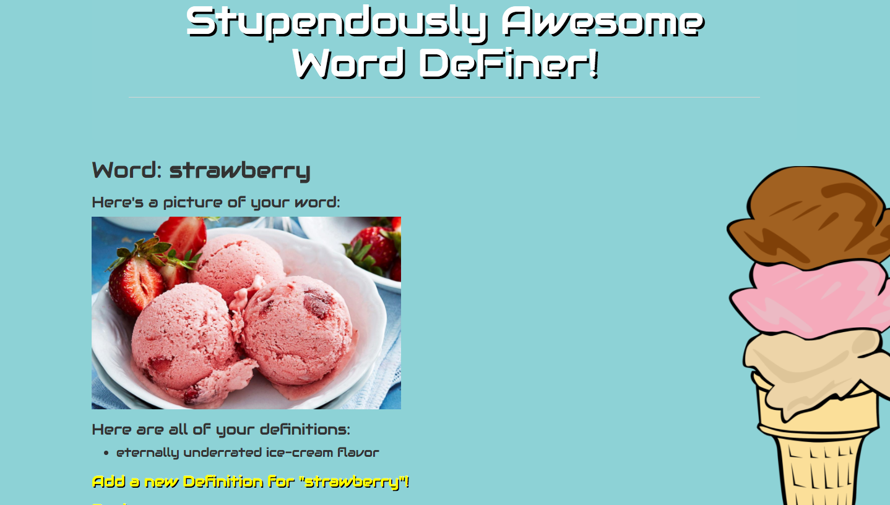
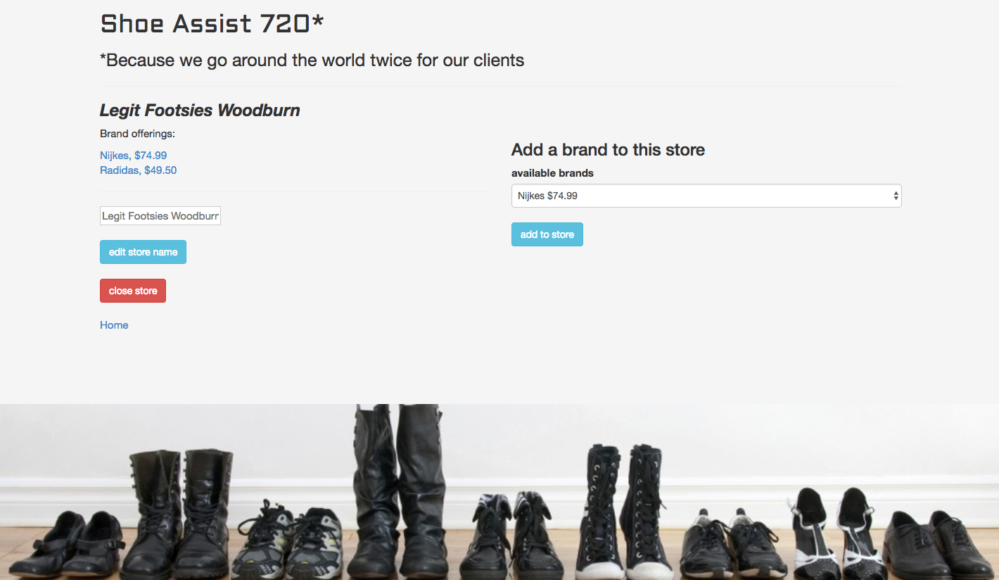
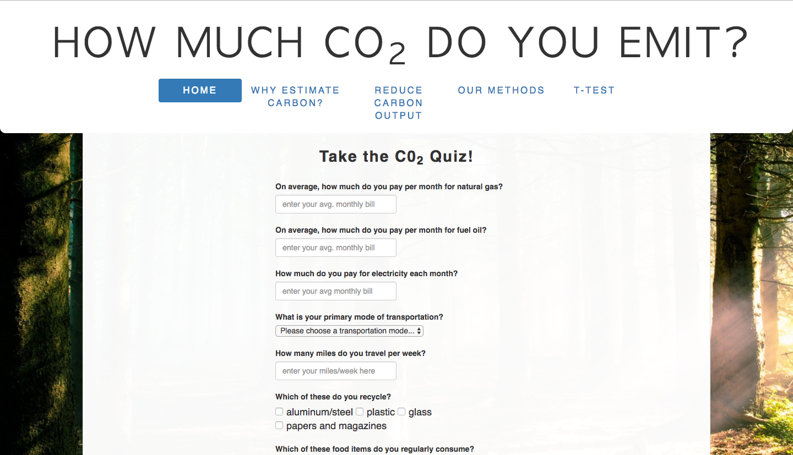
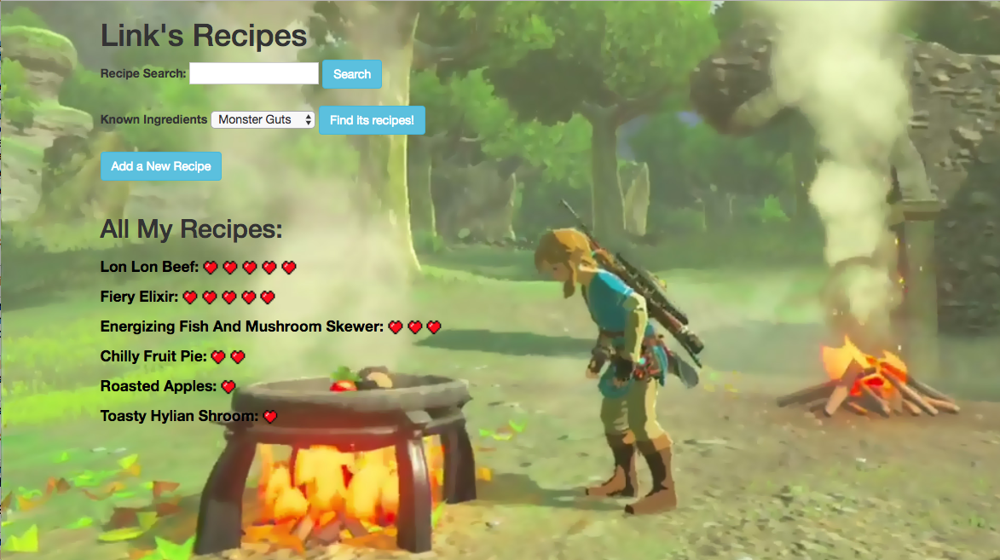
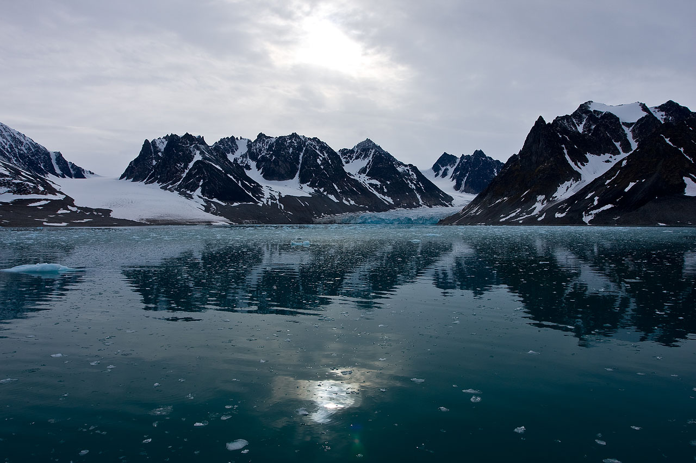
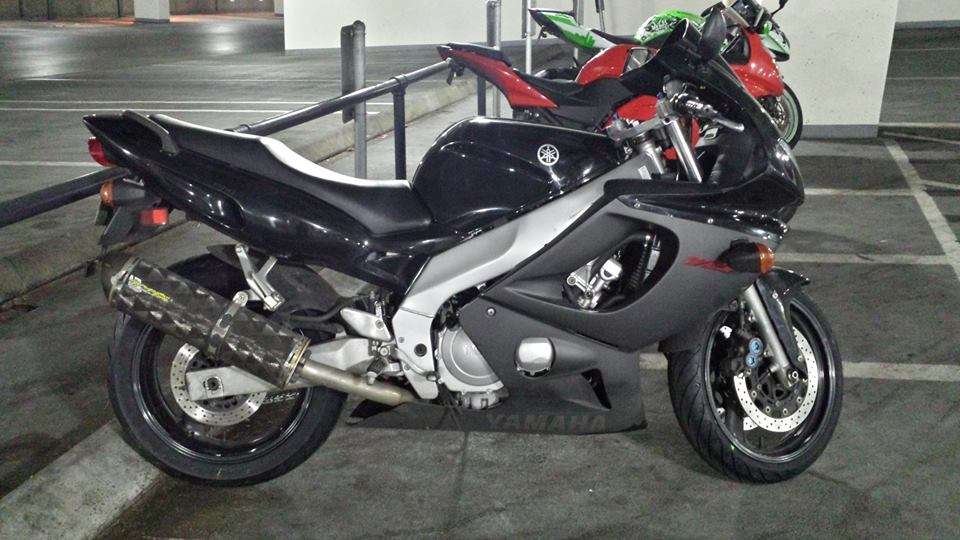

Projects
Word DeFiner
A ruby and sinatra built website was designed for children. It allows them to add their own words and pictures together, and create unique and zany definitions!
- create words and pictures with one to many relationship with definitions
- custom classes
- object oriented design
- awesome ice-cream picture
Shoe Assist 720
A Ruby project featuring postgresql databases with the assistance of active-record. Build your own shoe distribution empire with countless stores and shoe brands. Name your price, change your price, close stores and liquidate brands on a whim. The power is yours.
- many to many relationships
- RESTful routing
- full CRUD functionality
- search bars!
Carbon Estimator
A carbon emission estimator and t-test calculator from intro into programming group week. Using known emission standards and evaluating user input allowed us to generate a monthly estimation for carbon dioxide emissions. The t-test calculator is a statistical method which allows us to compare two different groups of data (like emission outputs) to see if there are statistical differences:
- comprehensive quiz
- scientifically backed data
- real-world utility
- powerful t-test calculator
Link's Recipes
Saving Zelda and Hyrule is hungry work. Luckily, Link now has his own recipe app built to manage his growing list of recipes based on all the obscure ingredients he finds! This ruby and active-record based project features multiple many to many relationships while maintaining an endearing themed tribute to the legendary video game series.
- multiple many to many relationships
- RESTful routing and CRUD functionality
- search bar!
- sort by heart rating!
Scandinavian Vacation
These Nordic Vacation packages project had all the amenities a person could hope for. With four different deluxe packages to choose from, there was no end to fun with this project. Built using HTML, CSS, and bootstrap, this site had many pleasant features:
- custom rows and columns
- wells
- hi res background photo
- more Google fonts!
Wiki Duplicate

This wikipedia duplication project was also created using HTML CSS and bootstrap. The project turned into more of a spiritual representation of the wikipedia homepage than an exact duplication. Here are some features we used in its design:
- nav bar with tabs
- search field
- nested columns and rows
- customized wells using IDs
About Me
Education
I studied locally at Portland State University. There I received a degree in Environmental Science with a minor in Biology. Before PSU I attended Clackamas community college where I attained an Associates degree. My interest in environmental systems is still alive and well today. I specialized in watershed biogeochemistry and bio-invasion management in riparian areas, with extra emphasis on the statistical models (chi-square, t-test, etc) underpinning results.
Work Experience
In the past I worked as a humble washer of cars. From there I graduated to the big leagues of hotel valet. Concurrently, I've commonly had part-time or seasonal work more in line with my environmental field. Notably I was Oswego Lake Watershed Council's first project coordinator, where I built up volunteer watershed remediation programs at various sites within the city. I also more recently served as a water quality technician with Lake Oswego Corporation, working on improving water quality for the lake itself. The key highlight of that position lies in how many and how often I got to drive the boats. Fun stuff.
Why Programming?
Portland is saturated with fellow Environmental Scientists. It's a fantastic city to learn about the science, methodology and discipline, however the job market is very competitive. A master's degree is the new standard for a living wage, $30,000/year, job in this region, and I have been wondering what other options may be out there. As some of my friends have pointed out, programming is fun, useful and has still untapped potential in the environmental field. I believe having a strong foundation and work experience with programming can only help my professional career. Whether I'm building websites, apps, or statistical models, I believe programming is the future for not only myself, but for the field of many scientific disciplines.
Outside Interests
Outside of school and work I like to either relax indoors and have fun, or go outdoors and have even more fun! Here's a list of some of my favorite activities:
- Ride Motorcycles
- Read
- Watch the Portland Timbers FC (I'm fortunate enough to be a season ticket holder!)
- Paint (the painting at the top of this website is mine!)
- Work out
- Hike
- Whiskey
- Coffee
epicodus 2017 build by Grady L Shelton